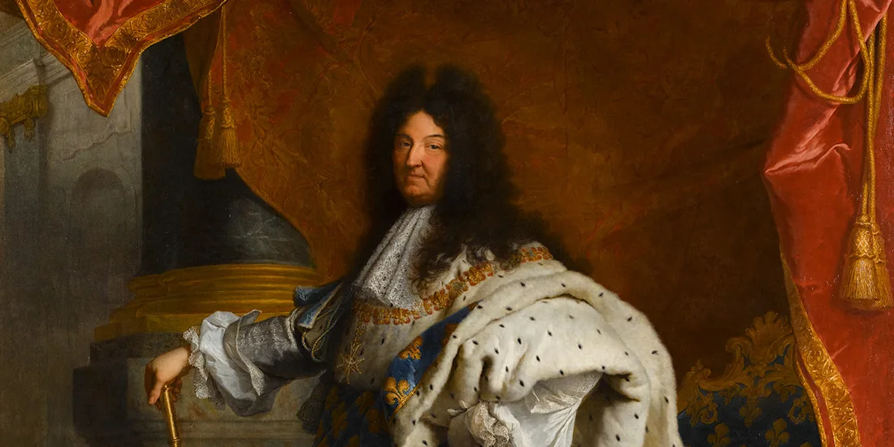
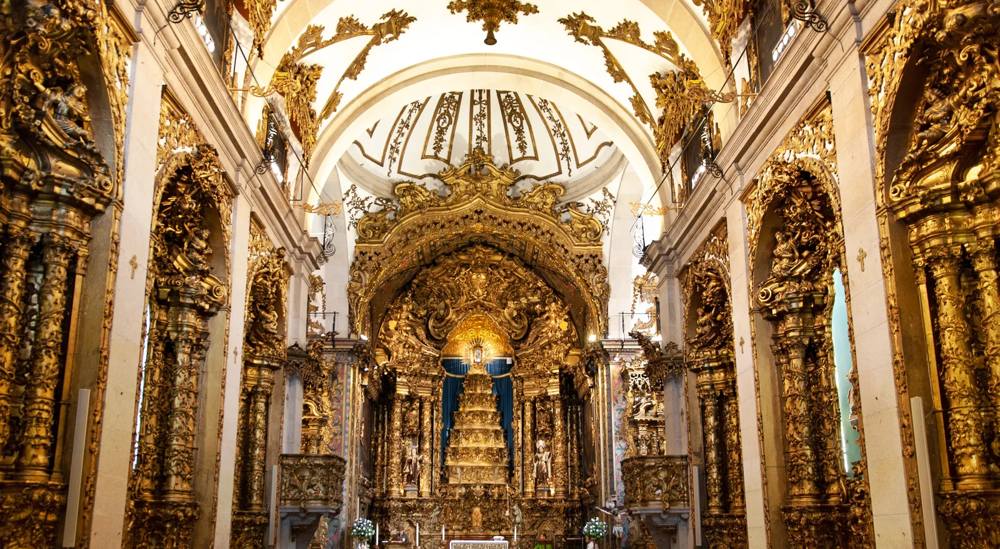
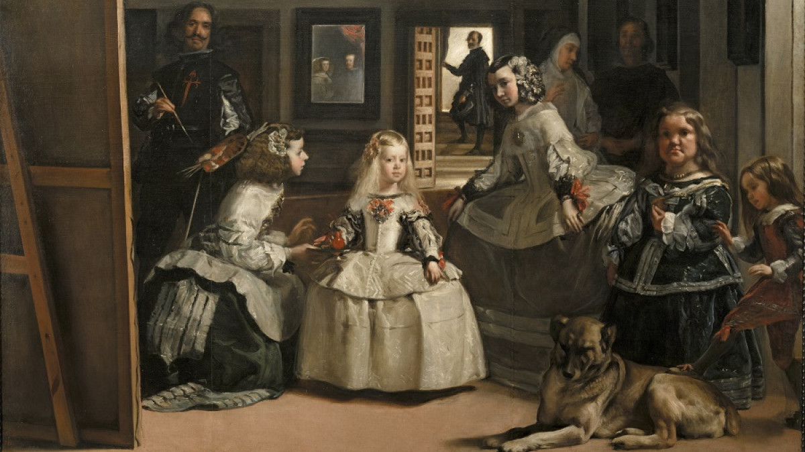

Contexto histórico
El Barroco fue una época de contrastes extremos donde la música, la política y el arte se unieron para impresionar y emocionar a la sociedad a través de tres grandes ejes:
- Política y Economía: los reyes absolutistas y la alta nobleza concentraron todo el poder y utilizaron el arte y las grandes fiestas cortesanas como una herramienta de propaganda para demostrar su riqueza y superioridad.
- Sociedad y Religión: en una Europa en crisis, golpeada por las guerras y enfermedades y dividida entre católicos y protestantes, la Iglesia y los gobernantes convirtieron la vida pública en un espectáculo teatral para conmover los sentimientos de una población que buscaba refugiarse en la religión y el entretenimiento.
- Arte y Música: tanto en la pintura (con el claroscuro) como en la música (con los cambios entre fuerte y suave), el objetivo principal fue romper el equilibrio del Renacimiento a través del movimiento, el exceso de adornos, la sorpresa y el drama, dando nacimiento a grandes géneros musicales como la ópera.
Surgen nuevos elementos musicales que determinan la formación de un nuevo estilo musical muy diferente al del Renacimiento:
La nueva textura: melodía acompañada.
En el Barroco se abandona la polifonía tradicional porque se consideraba demasiado compleja y confusa para el oyente, buscando una música más clara y emocional. Para solucionar este problema, los compositores barrocos evolucionaron la textura principal hacia la melodía acompañada: una sola voz principal lleva todo el protagonismo (y el texto) de forma muy clara, mientras que los instrumentos hacen un acompañamiento armónico por debajo. Es el nacimiento del concepto moderno de "cantante + banda" que seguimos usando hoy en día.
El bajo continuo
Es la técnica de acompañamiento que se usó en absolutamente toda la música del Barroco. Es la línea de bajo y batería de la época, la base rítmica y armónica sobre la que se apoya la melodía principal. Consiste en dos elementos trabajando en equipo:
- Un instrumento grave que hace la melodía del bajo: generalmente un violonchelo o un fagot. Toca las notas más bajas de forma continua.
- Un instrumento que puede hacer acordes: normalmente el clavecín, el órgano o el laúd. Rellena el sonido tocando los acordes que van bien con ese bajo.
Contrastes
Pasar de un pasaje fuerte a uno piano, pasar de un solista a que responda la orquesta... La música del barroco está llena de contrastes.
Algunos compositores destacados son Johann Sebastian Bach, Georg Friedrich Händel, Claudio Monteverdi y Antonio Vivaldi.
 |
 |
 |
¿Qué vamos a aprender?
3. Músicas barrocas
3.1 - Música vocal religiosa
3.2 - Música vocal profana
3.3 - Música instrumental
3.4 - Instrumentos del Barroco.